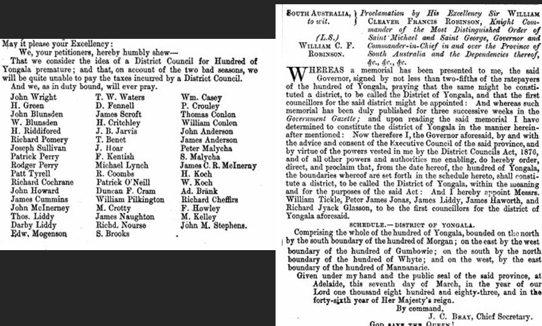
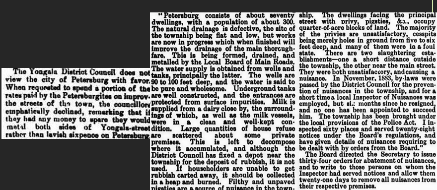

140 Years
of Peterborough as a Municipality
1886 to 2026
1882 to 1890
In 1886 Petersburg became a corporate town, breaking away from the Yongala District Council after years of rivalry over rates, roads and railways. This history walk follows the story from the first council meetings in 1882 through to 1888. Along the way you will meet William Threadgold, the first mayor, and read how townsfolk dealt with muddy streets, unhealthy conditions, bitter railway disputes and a brand new local newspaper. See the original clippings and Gazette notices that shaped the town we know today.
1882
About 40 people attended a meeting held in Yongala on 5th September 1882 to discuss forming a district council within the Hundred of Yongala. Mr W. N. Robinson convened the meeting and was called on by the chair Mr J. Ramsay J.P. to give his reasons for forming a district council. Reasons for and against were heard and it was decided to form a committee to evaluate the feelings of the inhabitants of not only the Hundred of Yongala, but also the neighbouring Hundreds of Morgan, Blackrock, and Mannanarie.
The formation of a district council was discussed at a meeting held at the Petersburg Hotel on Monday 25th September. As Petersburg was in the Hundred of Yongala, this would affect them and there was a great deal of talk for both sides. A proposition was carried; “That the time had not arrived for the formation of a district council for the Hundred of Yongala, and that a counter memorial be got up as soon as possible.” A committee of nine gentlemen was appointed to follow up on the various propositions that had been adopted.
1883
In January 1883, a memorial by taxpayers of Petersburg was sent to the Government against the formation of a District Council for the Hundred of Yongala.

The South Australian Government Gazette
11 January 1883 p. 69 and 8 March 1883, p. 85
A proclamation in the Government Gazette announced the Hundred of Yongala to be called the District of Yongala and a district council was formed. The first meeting took place on Saturday 31st March 1883. Mr William Tickle was elected as Chairman and Petersburg was included in the Yongala District Council.
1884
Another memorial by taxpayers from Petersburg was sent to the Government against the formation of a District Council for the Hundred of Yongala in January 1884. Some of the hottest temperatures experienced for years in January and February 1884 gave way to a heavy thunderstorm in early March flooded the streets. It was noted that the road into Petersburg was in a very bad condition and that the Yongala District Council while happy to take rates were not interested in the upkeep concerning Petersburg.
Most of the road from Dawson to Petersburg was in a disgraceful state and many farmers had chosen to hold onto their wheat rather than try to transport it along this road. Wagons with teams of sixteen or more horses attached had been known to be stuck there for hours. The settlers approached the local Members of Parliament to have the road placed on the Schedule of Main Roads, which would repair roads outside of District Councils. Part of the road came under the Yongala Council, and they would have to repair that portion, which they were reluctant to do.
A public meeting was held on 27th June at Hoar’s Hotel to discuss several local wants. A letter was to be sent to the Mayor of Port Pirie asking that the petition adopted by Port Pirie on 25th June stating that the railway to the Barrier Ranges (N.S.W.) starting at Petersburg be forwarded to them so more signatures can be added. The meeting also discussed the idea of having the District Council of Yongala divided into wards. A letter was sent to the council.
At the next public meeting on 19th July, it was decided to petition the Government for permission to form Petersburg into a corporate town. Rivalry and jealousy had always existed between Yongala and Petersburg, and the people of Petersburg did not think it was fair that rates collected from them were used to benefit Yongala. Mr Threadgold was nominated as mayor for the proposed corporation, and it was suggested that there be two wards, North and South. Three councillors were nominated for each ward: Messrs Hosking, Cochrane and H. Koch for South Ward and Messrs. Callary, Hoar, and Wright for North Ward.
A memorial signed by the Councillors from the District of Yongala and about 100 ratepayers was sent to the Governor objecting to the proposed Petersburg Corporation. They also requested that the present Council district be divided into three wards.
By the end of November an agitation for a separation from Yongala District Council and the formation of a corporation was proceeding.
There had been much debate on whether the railway to the Barrier Ranges should run from Petersburg or from Terowie. There was rivalry between the two towns and petitions from many parties had been lobbied in Parliament.
Tensions between Petersburg and Yongala were becoming more evident when the Yongala District Council declined to “lavish sixpence” on Petersburg and spend any spare ratepayer’s money on upgrading Yongala.
On 17th December a proclamation in the Government Gazette directed that “The District Council of Yongala shall be divided into three wards, namely, Petersburg, Yongala, and South-East Wards, each ward returning two Councillors, and defining the boundaries of each ward.” Mr Jonathon Hoar and Mr Richard Cochrane were elected for Petersburg Ward.
1885
With the new railway to Silverton being built in 1885 many unemployed men found work building the railway reservoirs at Petersburg, Gumbowie, Parnaroo and Nackara. On 5th March one hundred and four unemployed men arrived by special train from Adelaide via Terowie. Mr Dyke the works manager had five wagons waiting to transport some of the men to the Seven-Mile camp and some to the Fifteen-Mile camp.
About sixty men from the Fifteen-Mile Camp were moved to the camp in Petersburg in May and this caused many more problems in the once quiet town. There were often drunken brawls and street fights amongst the workers. The workers were camped down by the reservoir which was to be enlarged.
A few boarding houses had opened but some of these were found to be very unhygienic and were shut down. New guidelines were passed, and boarding houses had to be registered, and regular inspections were done by the Corporation.
Correspondence from the meeting of the Central Board of Health on Tuesday 9th June 1885 shows a report from the local Health Inspector. He had inspected both Yongala and Petersburg and stated at the time that Yongala and its suburbs consisted of about ninety dwellings with a population of 350, compared to Petersburg with a population of about 300 with seventy dwellings. This was a drop from the official 1881 census.
The natural drainage in the town was defective although works were in progress to improve this. Large quantities of household refuse were being left to decompose and the depot fixed by the council was not being used. Most privies were unsatisfactory, with cesspits being merely holes in the ground from five to six feet deep, and many of them in a foul state.
At the October meeting of the Yongala District Council, it was reported that a new site for rubbish removal was being arranged. Footpaths in Main Street and Railway Street were to be built.
At a town meeting in the Institute on 23rd October there was debate on which side of the railway line a road from Petersburg to Terowie should run. Voters for the eastern side contended that the entrance and exit to and from the Main Street was the better route. The argument for the western side was that the entrance and exit would be in the centre of the town, which would suit more people. Forty-nine voted for the western side and thirty-five for the eastern side. Messrs Koch Bros offered land for this road.
John Blunsden, Philip Callary and Robert McPherson were elected for the Petersburg Ward on the Yongala District Council.

Port Augusta Dispatch and Adelaide Observer
Monday 1st December 1884 and Saturday 13th June 1885
1886
A large meeting of ratepayers was held at the Institute on Friday 9th March 1886 for the purpose of forming Petersburg into a corporation town. A deputation was being sent to Adelaide, and this matter was to be added. Mr William Threadgold was elected Mayor of the proposed council, with the following gentlemen elected as Councillors: East Ward; Messrs J. Wright and Edward Mogensen, West Ward; Messrs William Howard and Philip. A. Callary M.P., South Ward; Messrs Thomas Hosking and William Heithersay. It was proposed that the incorporated district be bounded on the north by Section 218, on the south by Section 216, on the east by the Terowie Road and on the west by the railway crossing and from thence by Mr Cochrane’s paddock. The boundaries of the three proposed wards were the Main Street to divide North and South Wards, and High Street to divide the East and West Wards.
The South Australian Government Gazette
17 June 1886 p. 1229
Petersburg became a corporate town on Tuesday 5th October 1886. The Mayor W. Threadgold and Councillors; Messrs Callary, Howard, Hosking, Wright, and Heithersay were sworn in at a ceremony at the Institute with Mr James Ramsay J.P. presiding. Mr Nelson was nominated for East Ward. Mr J. R. Hill was the first Town Clerk. Mr Callary resigned from the Petersburg Ward on the Yongala District Council.
Evening Journal
Tuesday 12 October 1886
Mr William Threadgold
First mayor of Petersburg
Another meeting was held on Thursday 18th November concerning the extension of the broad-gauge to Petersburg, and the necessity of having a local court in the town. It was thought that the government could lay a third line from Terowie or widen the present one. It was argued that as Petersburg Junction was destined to become a large traffic centre and it would cost the government three times as much in the future for any land required for railway purposes.
1887
Many residents were dissatisfied with the ratable value of their properties the Petersburg Corporation were charging. The one advantage of having their own council was that hopefully the work needed around the town that the District Council of Yongala kept disregarding would be done. “Clean footpaths and nice streets, instead of the wretched mud walk in winter, and blinding clouds of dust from unmade roads in summer,” was one of the hopes.
The Terowie Enterprise
Friday 28th January 1887
An article in the Port Augusta Dispatch on Tuesday 8th March stated that the Corporation of Petersburg was going a bit overboard with their 15 pages of by-laws in the Gazette. Below is a section of the 15 pages of By-laws by the newly formed Petersburg Corporation.
The Port Augusta Dispatch
Tuesday 8th March 1887
With the formation of the Corporation, by May 1887 the town was beginning to look a little more shipshape with all vacant allotments having to be fenced in. Road making had been tended for and would commence soon. Townsfolk had taken advantage of the good season, and many planted gardens and applications had been made to the Conservator of Forests for a number of trees for planting purposes. Business had been quiet, as expected for that time of the year, and all were looking forward to the prospect of a good season.
The Petersburg Times
Bitter rivalry between Petersburg and Terowie over where the break of gauge should be located prompted the movement in favour of a local newspaper, as it was felt that Petersburg was at a disadvantage over Terowie who had a local paper ‘The Terowie Enterprise’ published by Mr J. S. Pengelly.
Mr Threadgold (Mayor of Petersburg) approached Mr Robert M. Osborne of Adelaide to establish a paper in Petersburg. Mr Osborne agreed and brought printing machinery to Petersburg to start a local newspaper. A venue for the printing press could not be found after the Union Church was unavailable, so Mr Heithersay kindly lent a small unlined, dirt floored iron building at the rear of his machinery business premises in Main Street. The paper was printed in this small iron building near the Mill Street Crossing until a more suitable location was found in Railway Street.
The first edition of the Petersburg Times, Orroroo Chronicle, and Northern Advertiser was printed on Friday 12th August 1887. It featured an article on Messrs Heithersay Bros stump jumping plough, local news, and advertising for many of the businesses in Petersburg. The paper was four pages long.
Tensions between the towns of Petersburg and Yongala, Petersburg and Terowie, and Petersburg and Lancelot were increasing with the topics of a loop line for the Silverton Railway, a local court for Petersburg, a new broad-gauge line to Petersburg and the lack of growth in Lancelot and Yongala in September 1887.
A meeting of ratepayers was held on Tuesday 22nd November 1887. The meeting called by the Mayor; Mr William Threadgold was in response to a numerously signed requisition to hear the Auditors report of the Corporation’s first municipal year in Petersburg. There had been a considerable amount of dissatisfaction with the council for not fulfilling the requirements of the Municipal Act in reference to the preparations of the ratepayers’ roll, the delay of the yearly audit, and the non-advertising of the prospective receipts and expenditures. There were several new candidates for the council. The meeting was described by one journalist as “a sort of Civil War in Petersburg over Municipal Affairs.”
Elections for the Corporation were held for the first time as the original councillors were elected at a meeting. Mr W. Threadgold was elected as Mayor, and the Councillors elected were Messrs Heithersay, Howard, Klem, Wright, Osborne, and Callary.
Petersburg Times
Friday 2 December 1887
1888
Mr J. H. Touchell was voted as Town Clerk in January, and he took over from Mr J. R. Hill. The councillors voted to provide an office for the town clerk and that it should be big enough to hold their meetings in, and that the corporation have the whole and sole control over it.
The council voted to assist any firm starting a new industry in Petersburg and that they would take steps necessary to have the town declared a manufacturing district. Councillors Callary, Heithersay, Klem and Osborne were elected to a committee to promote this idea. Mr Howard the new Councillor for the East Ward was fined at a council meeting for calling the council a fraud over the election of Mr Touchell as town clerk as he felt the proceedings had been carried out unfairly. This fine was later rescinded.
The secretary to the Petersburg Board of Health wrote to the secretary of the Local Board of Health, Adelaide after complaints to the resident engineer Mr Stephens at the railway yard were ignored. Mr Touchell wrote that two distinct and separate nuisances existed on the railway premises at Petersburg.
By 1888 the population of Petersburg had increased to approximately 800. A report by the Board of Health Chief Inspector Mr Farrell, pointed out that little had been done to improve the sanitary condition of Petersburg.
Petersburg Times
Friday 13 January 1888
THE PETERSBURG CEMETERY. MEETING IN THE INSTITUTE HALL. - Petersburg Times – Friday 20th April
A public meeting, called by the mayor, at the request of a large number of ratepayers, was held in the Institute Hall, Petersburg, on Wednesday evening last to consider the difficulties which have lately arisen with regard to the management of the local cemetery.
There was a fair attendance, and the mayor was voted to the chair, whilst Mr Limbert acted as secretary.
The Chairman said that the difficulties under which the Committee of management laboured were caused by the absence from the colony of two of the trustees the curator and the Secretary, which latter had gone over the border, taking all the money, books, and documents with him. The corporation had at their last meeting expressed themselves agreeable to take over the cemetery and as the trustees were willing to transfer their interest their appeared to be no difficulty in the way of this being done. A curator had been appointed (pro term) that afternoon.
At present there was a strip of land about 5 chains long between the cemetery and the Corporation boundaries but that the proprietors had consented to have transferred to the Corporation.
The Local Board of Health had begun to fine the many townsfolk who had ignored their notices for the abatement of nuisances and until now had treated the Board with indifference. Mr Thomas Williams of the Petersburg Hotel was fined at the Police Court £3 11s for abusive language and assault on the Secretary of the Local Board of Health.
Petersburg Times
Friday 4 May 1888
Mr Callary proposed that a petition be presented to His Excellency the Governor praying that he will alter the boundaries of Petersburg by adding to the South ward section 215 in the Hundred of Yongala.
A conference of delegations from various northern municipalities was held in the Institute Hall, at Petersburg on Saturday 2nd June 1888. The meeting was chaired by the Mayor Mr W. Threadgold and was held to consider the question of the Barrier trade. Mayors and representatives from Port Pirie, Port Augusta, Jamestown, Gladstone, Petersburg, and Orroroo were present, as well as the Hon W. Copley and J. Darling M.L.C.
The Mayor of Port Augusta (Mr D. Drysdale) opened the proceedings pointing out that the residents of that town felt that the Adelaide press seemed to forget that their Port even existed. He stated that while £170,000 had been spent of Port Adelaide and only £55,000 on Port Augusta, the shipping facilities of the latter were far superior. He felt that they were not getting a fair share of the rail traffic from the Barrier Ranges and Port Pirie was getting more than they needed. They did not wish to ‘rob’ Port Pirie or Petersburg of trade but felt that a railway line could be constructed from Mannahill or Winnininnie to Carrieton, and smelting works erected at Port Augusta. He felt that Port Pirie already had an established trade and would lose nothing, whereas if they allowed the line to be tapped south of Petersburg it would mean that all the trade would go to Port Adelaide. A discussion followed and the Hon. W. Copley was glad to find that the northern towns, and especially the seaports, were working so well together.
The Mayor and Councillors of Petersburg, accompanied by the Town Clerk, met the Railway Commissioners at the Petersburg Railway Station on Thursday 7th June 1888 on the arrival of a special train from Port Pirie. The meeting was to point out the urgent need of an over-way pass bridge, and other local wants. The Mayor pointed out that the station was on the wrong side of the line and all passengers had to cross over the rails.
Petersburg Times
Friday 8 June 1888
Petersburg was at last going to have a local court established in the town, and the corporation boundaries were to be enlarged to include the cemetery, which was still under control of the Yongala District Council.